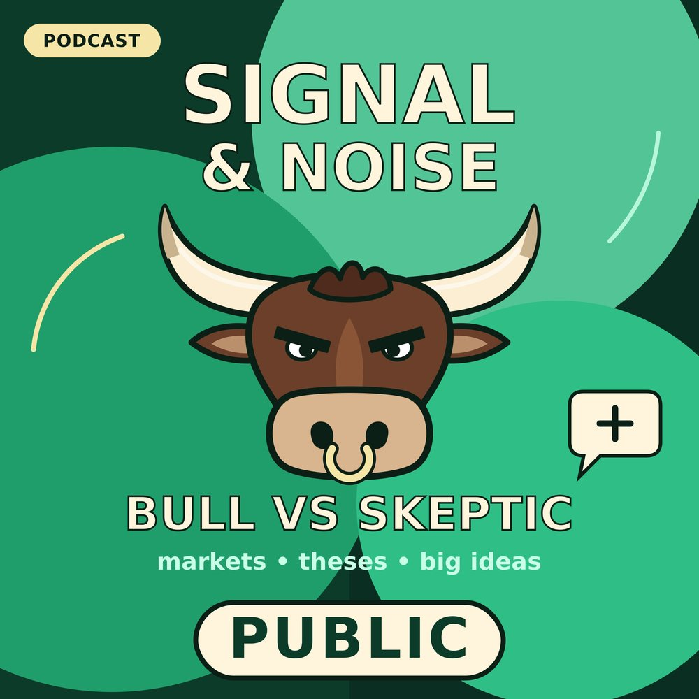

Palantir Q3 2026: Ninety-Six Percent, Red Screen
Palantir grew revenue 96% to $2.31B in Q3 2026, beat on EPS ($0.44 vs $0.41), raised guidance again, and U.S. commercial passed U.S. government for the first time. The stock still slipped after hours. Max (bull) and Lena (skeptic) debate the record quarter, the soft spots (bookings +6%, backlog flat quarter over quarter, international commercial +1% Q/Q, costs +20% Q/Q), the best lines from Alex Karp's letter and call, a call-in from a former enterprise data buyer, and how a prominent bull's pre-earnings checklist scored.